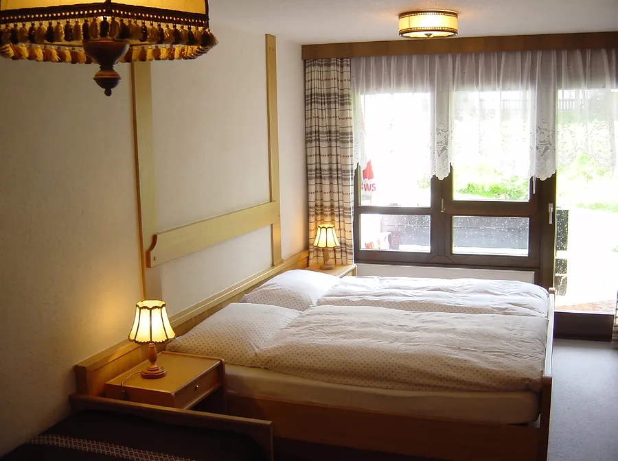
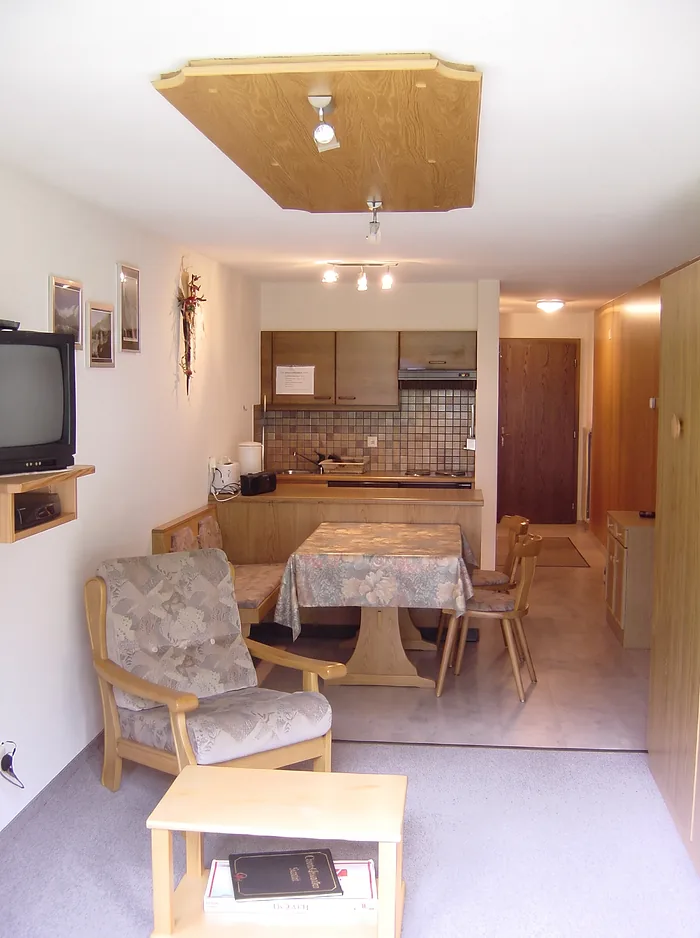

Chalet Rustica · Die Wohnungen
Portjengrat

Wohnung · Erdgeschoss
Ein Schlafzimmer, zwei Klappbetten im Aufenthaltsraum, zwei Duschen.
1Schlafzimmer
5Schlafplätze, davon zwei Klappbetten
2Duschen / WC
Alles da, was Ferien brauchen.
- 1 Schlafzimmer mit einem Doppelbett und einem Einzelbett
- Aufenthaltsraum mit zwei Klappbetten, TV und Radio
- Essraum und Küche mit Geschirrspüler, Kaffeemaschine und Toaster
- 2 Duschen / WC mit Haartrockner
- Südbalkon mit Liegewiese
- Hauseigene Waschküche
Im Preis inbegriffen sind Bettwäsche, Tücher, Heizung, Warmwasser, Strom, Endreinigung und Kurtaxe. Alle drei Wohnungen im Vergleich

Ein Blick in jedes Zimmer.
Klicken Sie auf ein Bild, um es grösser zu sehen.
Möchten Sie Ihren nächsten Urlaub im Chalet Rustica verbringen?
Hier können Sie mit der Familie Andenmatten-Zurbriggen Kontakt aufnehmen.